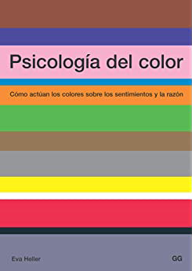

Heller, E. (2008). Psicología del color: Cómo actúan los colores sobre los sentimientos y la razón. Barcelona: Gustavo Gili.
Para este trabajo la gestión de color para transmitir una sensación al jugador es muy importante, es por ello que se ha tomado como principal refencia de color este libro para la creación de personajes y ambientación de escenarios. Y con ello, potenciar las singularidades y persoanlidades de cada civilación o personaje destacable.
Heller nos proporciona una visión de la percepción humana de los colores mediante sus estudios, e incluso recopila en pequeñas gamas cromáticas los conjuntos que representan ciertas emociones.
Albers, J. (1996). La interacción del color. Madrid: Gustavo Gili.
Desde una perspectiva más artística y práctica este libro ejemplifica el uso de contraste y tonos para la expresión de cualidades físicas del color.